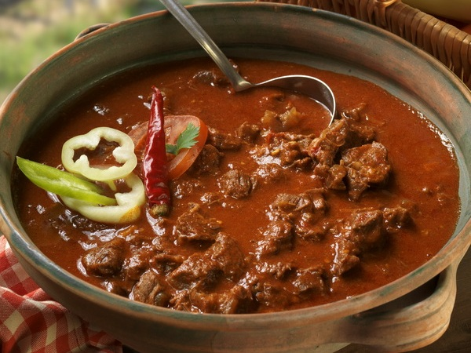

Goulas

Description
Goulash (Hungarian: gulyás) is a soup or stew of meat
and vegetables seasoned with paprika[1] and other spices.
Originating in Hungary, goulash is a common meal predominantly eaten in
Central Europe but also in other parts of Europe.
Ingredients
- 2 medium onions
- 2 teaspoons butter or lard (preferred)
- 1 teaspoon caraway seeds
- 2 tablespoons paprika
- ¼ cup flour
- 1 ½ pound stewing beef trimmed and cut into 1" cubes
- 2 cups beef broth or water
- 1 cup diced tomatoes canned
- 1 teaspoon salt
- ¼ teaspoon pepper
Instructions
- In a large pot, melt butter and add onion. Cook till translucent. Stir in caraway seeds and paprika and mix well.
- In a bowl, dredge the stew beef with flour. Add beef to the onion mixture and cook for about 2-3 minutes.
- Slowly add about ¼ cup of the beef broth to lift the brown bits off the bottom of the pan. Then add remaining broth,
diced tomatoes (potatoes and carrots if using), salt and pepper.
- Stir and bring to a boil, cover, then reduce to a simmer for about 1 ½ -2 hours or until tender